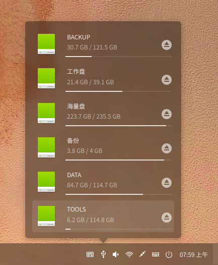

由于一些不可抗拒的原因（主板莫名不兼容win）不得不选择Linux，试过多种Linux，deepin(深度操作系统)可以说是众多linux最省心好用的了。
如何发现这么好的系统的
首先支持国产
这个当然的，国产的好东西必须大力支持！
国际排名高
这个不多说，大众的眼睛是雪亮的，看下排名就知道啦：
可以看到的deepin基本稳定在第十名，注意现在时间2020年02月15日。
最近疫情原因很长时间没有维护了，排名有所下降属于正常现象。
记得最高排第六。
软件生态
其实我是冲软件生态来的
软件生态是一个操作系统的灵魂，没有软件生态，它就不配叫操作系统，那叫啥？可能叫嵌入式系统？功能机？（Lumia警告）
Microsoft，Google，Apple都为他们操作系统生态投入了大量资金和人员，包括学生组织开发活动，软件竞赛之类的活动，或是直接给钱，足以突显软件生态的重要性。
众所周知，Windows系统的整体操作逻辑已经十几年没变了，而且易用性越来越差，在众多现代操作系统中处于劣势，但为什么Windows用户永远不会降低呢，这也是软件生态的效果，Windows下的软件生态非常庞大，难以超越，这也表现了当初微软在中国地区容忍盗版泛滥现象的战略意义。
好了好了，有点偏题了。
下面说deepin的软件生态：
- Deepin基于Debian GNU/Linux，支持Linux软件，Debian特有的deb软件，以及Debian著名的apt包管理系统
- 预装wine，通过底层代码适配大量Windows软件
- 深度团队对于不支持wine的Windows软件进行专门适配，这个是其他发行版装了wine也比不上了的。像Windows QQ就是专门适配的，比QQ官方发布的Linux版好用
- 预装Chrome，支持webAPP，ChromeOS软件，安卓软件
可见这软件生态真的是太强了
这是GNU/Linux里生态强的，据说还有个国产的ChromeOS生态也贼强（国产都喜欢玩全平台适配？），没用过，叫fydeOS，可以去尝试一下。
这个生态空口无凭，看下例子
上面这个是应用商店，很多是深度团队自己适配来的，很良心了。
上面这个是QQ官方的Linux版，可以看出来界面相当远古了，而且看那大小也不像好东西
这个是wine版QQ，深度团队专门适配过的，版本也比较新，但最近好像是疫情原因还没给适配下一版本。
上面这是应用商店里编程开发专区，可以看到这里特殊适配的就少了，毕竟开发用的软件还是给做Linux版的
这里说个有意思的，深度团队还把著名游戏平台steam整来了，如下图：
这就很厉害了，据说还能玩GTA呢
下面这个是下载排行榜：（偷偷说个事：Linux版百度云不限速！）
使用体验
整体使用体验不错，高斯模糊运用得当
桌面
桌面总览
请无视我桌面的文件谢谢（
dock栏
dock可以设置成MacOS样式或Windows样式，非常友好
上面这是仿win，即高效样式
上面这个是仿MacOS样式，即潮流样式
我使用的是高效样式，之后将使用高效样式演示，潮流样式类似
硬盘管理器

WiFi
应用列表
这个也有两种风格，这个是仿win的，下面这个是仿MacOS的
工作区总览
设置界面
这里是通知界面，点右上角切换设置
设置总览：
下面把整个设置截屏看看
值得一提的是，deepin自带一个开机引导选项，非常方便
终端
这终端和普通GNU/Linux终端一样，没有区别
文件管理器
Chrome
电源选项
资源管理器
其他软件
这里推荐几个有用的软件
连接手机
我用kdeconnect连接手机，堪比airdrop，十分好用
那些你懂的飞机
这个我用clash，github上有，配置有点复杂，但好用
打代码
VSCode
sublime text
结尾
以上是我简单对deepin的评测，十分好用，目前我已使用一年多了，没什么大问题（除了上次我不小心输错命令把软件全删了），希望这个国产操作系统可以越做越好。